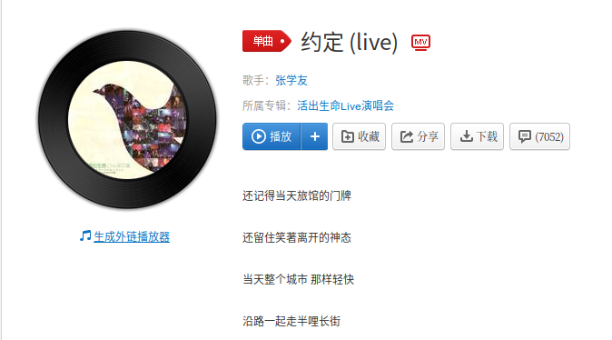
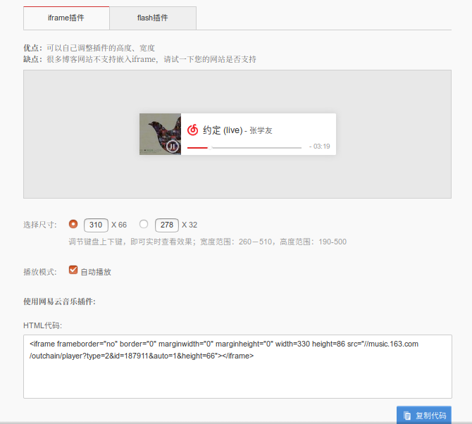
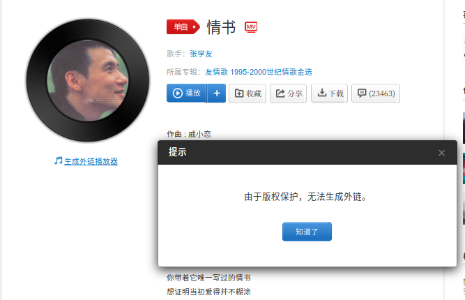
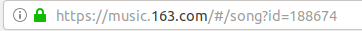

为了收藏一些喜欢的音乐分享在博客上，使用iframe插件生成网易云音乐的控件。
获取链接
- 简单的可以直接获取到，点击音乐进入播放界面，然后点击
生成外链播放器


例如此处的音乐《约定》的iframe插件代码是：
1 | <iframe frameborder="no" border="0" marginwidth="0" marginheight="0" width=330 height=86 src="//music.163.com/outchain/player?type=2&id=187911&auto=1&height=66"></iframe> |
Note: 其中的id就是和网址的id相同（重点就是这个id）
此时只需要将代码拷贝到md博客文章中，发布博客后就可以查看到音乐。
- 有些音乐没有获取外链的版权
如下图：

此时只需要注意这首歌的网址里面的id即可，然后替换上面的那个代码里面的id，之后就可以播放了～
